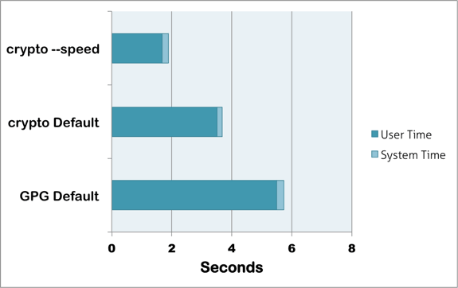
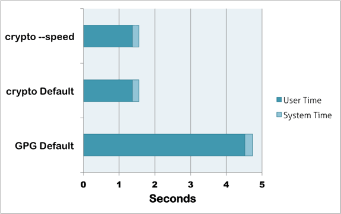
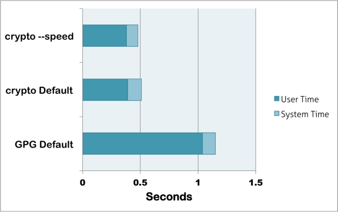
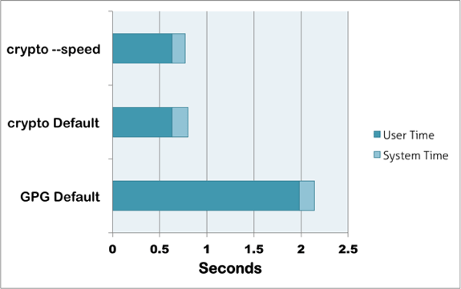

Simple symmetric GPG file encryption
Benchmark testing was performed on directories of multiple files by mime-type using the GNU time (gtime) application, gpg v2.0.22, and crypto v1.1.0 on a MacBook Pro Late 2011 model (2.4GHz Intel Core i7, 8gb RAM). The tests compared the default gpg AES256 encryption and compression settings (GPG Default) with the default settings used in crypto (crypto Default) and crypto run with the --speed switch active (crypto --speed). Results are reported in seconds of user and system time for encryption of all files in the test by test group. The cumulative duration represents total CPU time.
The results show a significant improvement in the encryption speed with crypto across both text and binary file types. For text files, the cost of this speedup is a slight decrease in the file compression that is performed at default crypto settings and the elimination of compression (in some cases a slight increase in file size) with the --speed flag. For binary files, the speedup occurs without significant change in the resulting file size. This is to be expected because these files are not significantly compressed with the default compression algorithm used by gpg, yet this compression attempt adds significant time to the encryption run. crypto eliminates this unnecessary compression attempt for all binary file types.
Click through the file type header link for test details.




These benchmarks can be replicated with the following commands:
gtime --verbose crypto --speed testdirgtime --verbose crypto testdirgtime --verbose crypto --space testdir